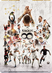

2024
Toni Kroos
This artwork pays tribute to the legendary career of Toni Kroos, capturing his countless achievements from his first match at Real Madrid to his final game. It showcases his Champions League triumphs, World Cup glory, and many unforgettable moments. I had the honor of personally presenting this piece to him.

